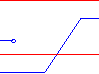

G
G iff
G has a subgraph
G1, there is an axiom
G1 G1, and
G is G with
G1 replaced by G1.
iff
G has a subgraph
G1, there is an axiom
G1 G1, and
G is G with
G1 replaced by G1.
The operational semantics discussed in the
previous section
is still preliminary, and needs more work. For example, there should
be a direct graphical presentation where
G G iff
G has a subgraph
G1, there is an axiom
G1 G1, and
G is G with
G1 replaced by G1.
Having defined a notion of labelled transition system for graphs, this opens up the usual questions of bisimulation, higher-order bisimulation, fully abstract semantics, and so on.
We could also investigate lax versions of the categorical structure, for example rather than having beta-equivalence, we could add a 2-cell for beta-reduction. This would add extra complexity to the categorical picture, but would fit better with the usual practice in defining operational semantics, and would allow us to remove all of the equivalences which are not graph bisimulations. This would improve the correspondence between the graphical and equational presentations: terms would be provably equal precisely when they are bisimilar.
There are various typing issues left for future work, such as recursive types, universal and existential polymorphism, and subtyping.
Also, tracing is currently restricted to value declarations. Whilst this is adequate for the motivating example of recursive functions, there are natural examples (such as building cyclic ref-structures) where it would be appropriate to allow tracing in central declarations as well. This is left for future work.
Currently, if-statements are only supported through thunks to delay the evalutation of the result until the value of the guard is known, for example:
 C
P.
We can easily add case-statements to the language to incorporate coproducts,
but finding a graphical representation is slightly trickier. The coproduct
structure is monoidal, so we can represent it graphically, however we
need to distinguish between the coproduct graphical structure and
the premonoidal graphical structure. One possible graphical representation
is (giving the version in P since the others are
simpler) as follows.
C
P.
We can easily add case-statements to the language to incorporate coproducts,
but finding a graphical representation is slightly trickier. The coproduct
structure is monoidal, so we can represent it graphically, however we
need to distinguish between the coproduct graphical structure and
the premonoidal graphical structure. One possible graphical representation
is (giving the version in P since the others are
simpler) as follows.
The morphsim f + g:
 1+1
as:
1+1
as:
All of the computations we have looked at in this paper have been single-threaded, since there is only one control arc running through the graph. There is an obvious generalization to multi-threaded computations, very similar to action calculi, where we consider graphs with more than one control line. We could then add concurrent features to the langauge such as process forking:

Although this presentation is graphically appealing, it is not obvious what the categorical presentation should be. This is left for future work.